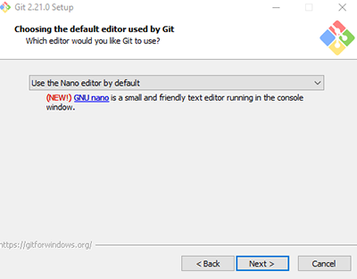

Choose the instructions based on your computer
Install Git on Windows
Please note: You may need administrator's rights to install the Git software. If you do not have Administrator's rights, please contact your computer support team.
- Navigate to http://git-scm.com/ The webpage will auto-detect what operating system. Look for the computer screen on the right-hand side of the page. Click on Download 2.21.0 for Windows. Your computer should automatically launch an explorer window and ask you where to save the program on your computer.
- Navigate to where you saved the Git program .exe file. Right-click on the file and choose ‘Run as Administrator’. If asked, enter in administrator credentials. This should launch the installer. You may receive a security warning about the software being from an unknown publisher. You can safely ignore this message. Click the Run or Yes button to continue or cancel to exit out of the installation.
- The Git License will display. Read through and then Click Next to accept the terms of the license.

- Choose where Git will be installed. Click Next to choose the default location provided unless you know you need to install the software somewhere else on your machine.

- Choose where Git will be installed. Select the components you want installed along with the Git software. There are already some default options checked. Make sure to check: Windows Explorer integration, including Git Bash Here and Git GUI Here. This component will allow you to use the Windows Explorer context menu to access git Bash and Git Gui. All other options are optional. See screenshot below.
- Select your Start menu Folder. Choose Next to use the default.
- Choose which default editor you would like Git to use. For this class, choose ‘Use the Nano editor by default’ and click Next
- Choose how you would like to use Git from the command line. You can choose ‘Git from the command line and also from 3rd-party software’ or ‘Use Git from Git Bash only’

- Choose a SSL/TLS library. Select ‘Use the native Windows Secure Channel library. This allows Git to use the certificates that are native to your machine and may avoid a path problem later on.

- Choose an option for how Git should treat line endings in text files. Recommended to keep the default as this is better if you’re planning on sharing your project with others who may be using a different operating system. Choose ‘Checkout Windows-style, commit Unix-style line endings’.

- Configure your terminal emulator to use with Git Bash. Use the default ‘Use MinTTY’

- Configure extra options. Check: Enable file system caching and Enable Git Credential Manager

- Choose Install to start the installation.
- Check or uncheck the boxes to launch Git Bash or to view the release notes. Click Finish to exit the installer.
Once installed, you can access Git bash or the Git GUI in a couple of ways:
- Open the Start menu, you’ll find a new Git entry with the Git Bash icon
- Best Way: Navigate to a folder on your machine where you want to use Git
- Right click inside the folder. You'll notice two new options in your context menu: Git Bash and Git Gui
Either way, you will see the following when you open Git Bash:

Note that you can’t use Git in directories that are from Box Sync or Box Drive.
After the class, if you want to change from Nano to using Notepad ++ as your text editor, see these instructions.
OK, Windows user, you're done with installation. We'll practice git in the workshop.
Install Git on a Mac
Download a PDF of these instructions for Macs.
- Git may already be installed on your machine. Open terminal and run and type:
git --versionIf Git is installed, you will see a reply such as:git version 2.20.1 (Apple Git-117)
- If git is not installed, you can install it via homebrew (if you already have homebrew on your mac), or download git from the git-scm site.
- Homebrew option: Open terminal and type:
brew install gitOnce the installation is complete, you can verify that the install was successful by trying the command in step 1 above.
- Download git option: Install it from https://git-scm.com/download/mac. Once installed try the command in step 1 above.
- Homebrew option: Open terminal and type:
You're ready to start working with Git on your computer!
Install Git on Other Platforms
So you're not using Windows or Mac? Try git-scm/downloads for your OS and follow instructions from there.
Set up an SSH key to authenticate with GitHub
If you run the following command, it will create a key on your computer. If you think you already have a key, you can run ls -al ~/.ssh to see if it's there - if it is, skip to the copying step.
ssh-keygen -t rsa -b 4096 -C "your_email@example.com"
Click enter to accept the defaults. If you choose to use a passphrase, keep it short! You should see a statement about your public information and key being saved.
The next step is to copy this information so you can paste it into your GitHub account settings. Because of the nature of the key, you'll probably want to use a special command to copy the key (as opposed to opening up the document in a text editor and copying it from there).
Copying on a Mac
pbcopy < ~/.ssh/id_rsa.pub
Copying on a PC
clip < ~/.ssh/id_rsa.pub
If "clip" doesn't work on your PC, try: cat ~/.ssh/id_rsa.pub
Paste your key into your GitHub settings
The last step in authenticating with GitHub is to log in to GitHub, go to your settings page (to do this, click on your profile picture and select "Settings from the drop down menu"). Once you're on the settings page, click "SSH Keys" on the left-hand menu, then "Add SSH key".
Is this step not working well for you? You can try another way to authenticate: See GitHub instructions for authenticating through https and a credential tool.